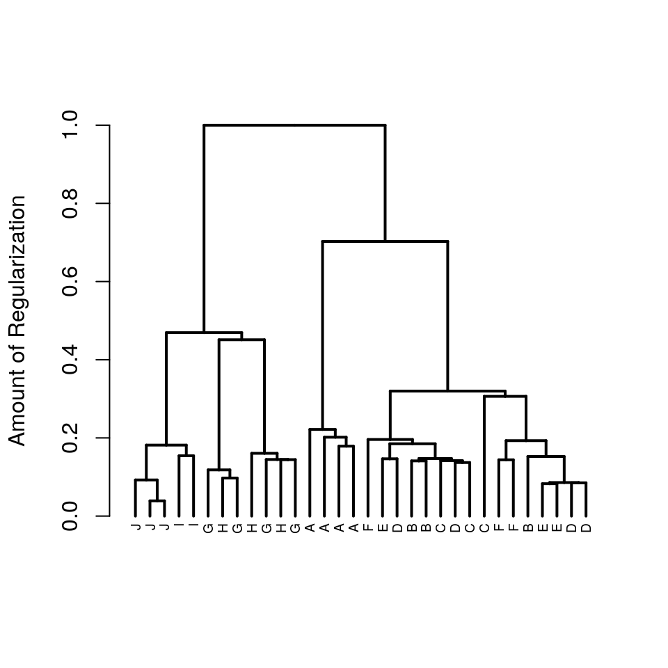
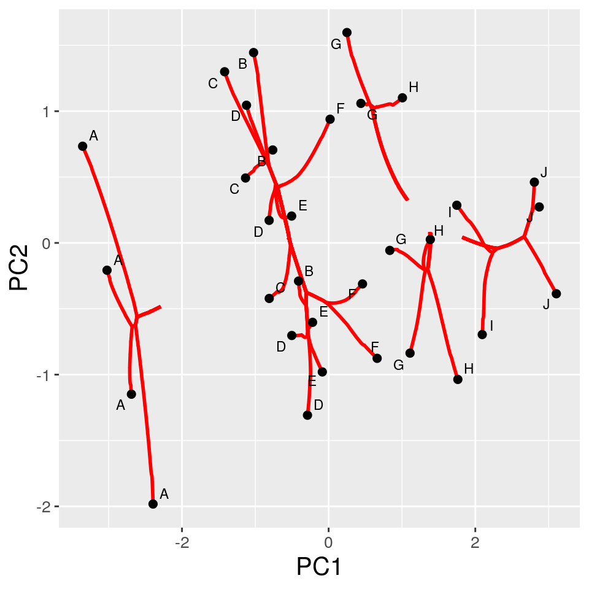
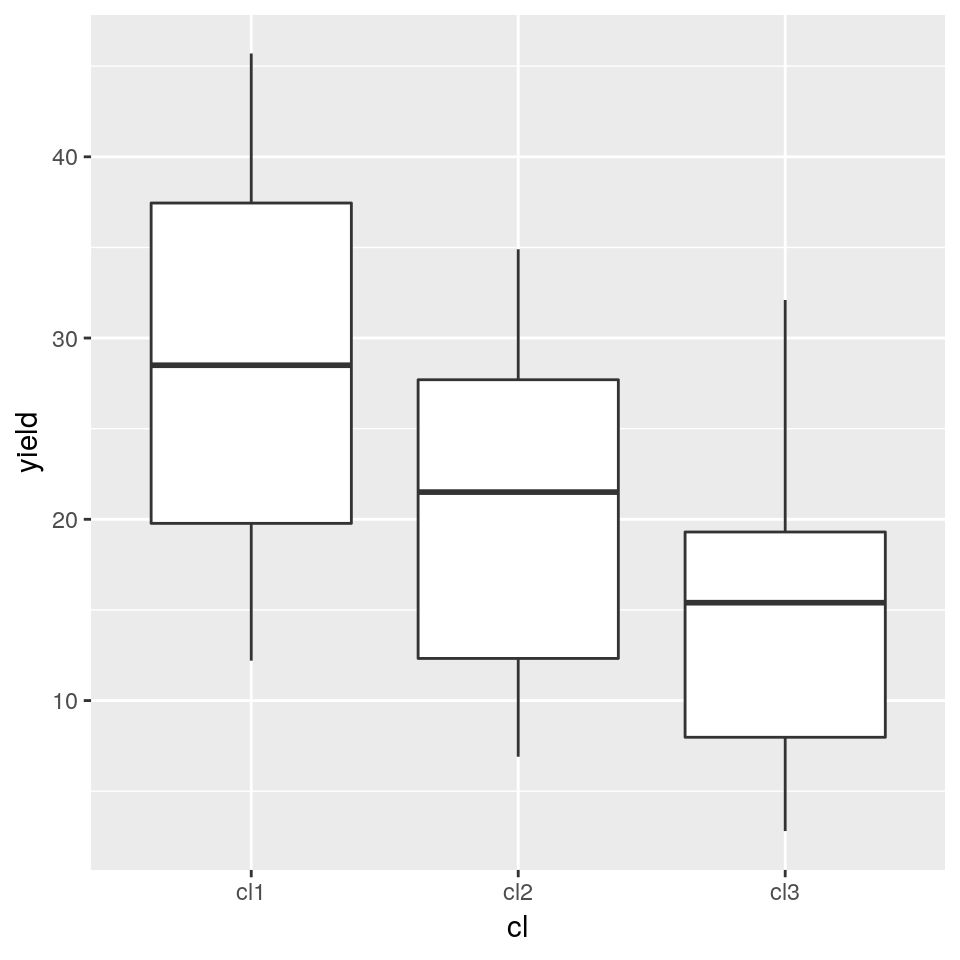
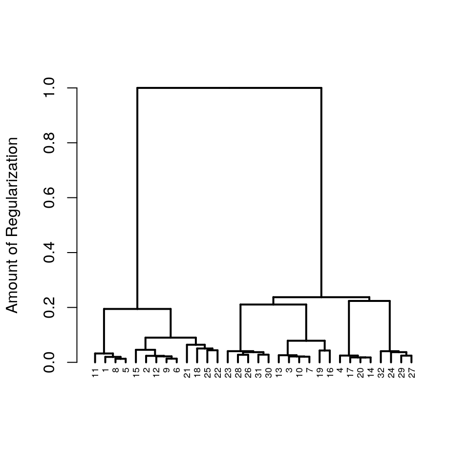
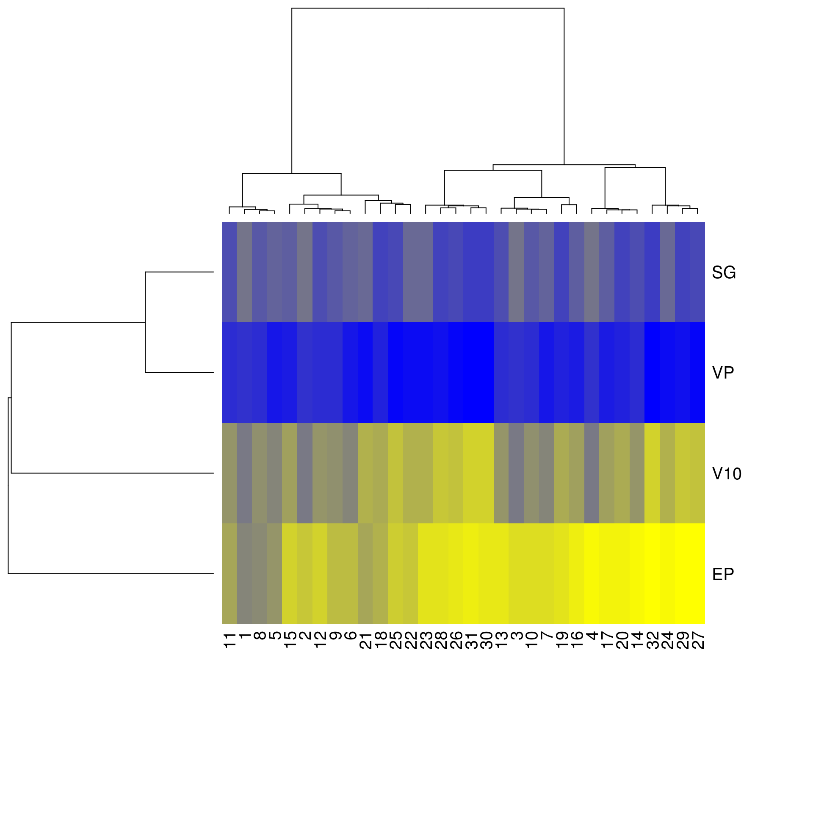

QuickStart.RmdThis vignette provides a quick usage guide to the clustRviz package, including fitting and visualization. In the sections below we work through a simple example dataset, illustrating both clustering and biclustering in clustRviz. While many details and customizations are discussed in the clustRviz Details Vignette, for now we show how to quickly fit, visualize, and save in clustRviz.
clustRviz may be used for clustering together observations based on similarities among their features. clustRviz accomplishes this by solving the Convex Clustering problem quickly using the technique of Algorithmic Regularization. The resulting algorithm, Convex Clustering via Algorithmic Regularization Paths (or CARP) provides a continuous path of clustering solutions which may be visualized and interactively explored.
For our first example we use the petrol data set from the MASS package.
# optionally install MASS package
# install.package('MASS')
data('petrol',package='MASS')
head(petrol)
#> No SG VP V10 EP Y
#> 1 A 50.8 8.6 190 205 12.2
#> 2 A 50.8 8.6 190 275 22.3
#> 3 A 50.8 8.6 190 345 34.7
#> 4 A 50.8 8.6 190 407 45.7
#> 5 B 40.8 3.5 210 218 8.0
#> 6 B 40.8 3.5 210 273 13.1The dataset contains the yield (Y) of a petroleum refining process and with measurements for specific gravity (SG), vapour pressure (VP), crude volatility (V10), desired gasoline volatility (EP), as well as sample identification labels (No); see ?petrolfor details.
Before clustering our data, we extract the columns of interest (here SG, VP, V10, and EP), and create the input matrix:
# create numeric input matrix
Xdat <- as.matrix(petrol[,c('SG','VP','V10','EP')])
head(Xdat)
#> SG VP V10 EP
#> 1 50.8 8.6 190 205
#> 2 50.8 8.6 190 275
#> 3 50.8 8.6 190 345
#> 4 50.8 8.6 190 407
#> 5 40.8 3.5 210 218
#> 6 40.8 3.5 210 273Clustering is done via a simple call to the CARP function below.
library(clustRviz)
carp.fit <- CARP(
Xdat,
control=list(
obs.labels = petrol$No,
X.scale=TRUE)
)Here we specify the sample number (No) as the labels for our observations. This is done by providing obs.labels to the control argument. While not necessary, providing labels adds clarity to many visualizations. Additionally, since our variables are measured on different scales, we set the X.scale option to TRUE as well; see ?carp.control for additional fitting options as well as examples in the clustRviz Details Vignette
Once fitted, a brief description of the fit and parameter choices may be shown
carp.fit
#> CARP Fit Summary
#> ====================
#>
#> Algorithm:
#>
#> Available Visualizations:
#> - Static Dendrogram: TRUE
#> - Static Cluster Path: TRUE
#> - Interactive Visualization: TRUE
#>
#> Number of Observations: 32
#> Number of Variables: 4
#>
#> Pre-processing options:
#> - Columnwise centering: TRUE
#> - Columnwise scaling: TRUE
#>
#> RBF Kernel Weights:
#> - phi = 0.1
#> - K = 3
#>
#> Raw Data:
#> SG VP V10 EP
#> A 50.8 8.6 190 205
#> A.1 50.8 8.6 190 275
#> A.2 50.8 8.6 190 345
#> A.3 50.8 8.6 190 407
#> B 40.8 3.5 210 218Visualizing the solution path is readily done via the plot function. A traditional dendrogram is displayed by default:
plot(carp.fit)
A more detailed visualization of the solution path can be obtained by plotting the principal components of the cluster means:
plot(carp.fit,type = 'path',percent = .10)
The plot above displays the first two principal components of the data, with black points representing the original data, and red curves illustrating movement along the solution path. As curves join together, observations are fused, and clusters formed. The percent argument tells plot to display a snapshot of the clustering solution path at \(10\%\) of total regularization.
Both the dendrogram and the clustering solution path may be viewed together interactively via the use of shiny applications:
plot(carp.fit,type = 'interactive')These interactive visualizations allow one to view the cluster solution path and dendrogram as the Algorithmic Regularization iterates vary.
In addition to visualizations, cluster solutions may be obtained via the clustering function:
# get the 3 cluster solution along the path
carp.clusters <- clustering(carp.fit,k = 3)
# display the labels
table(carp.clusters$clustering.assignment)
#>
#> cl1 cl2 cl3
#> 4 16 12
# display the cluster mean
head(carp.clusters$cluster.means)
#> cl1 cl2 cl3
#> [1,] 50.8 38.34375 36.60833
#> [2,] 8.6 5.20000 1.35000
#> [3,] 190.0 222.62500 283.83333
#> [4,] 308.0 316.87500 360.41667In the code above, we specify the number of clusters and clustering returns the both the cluster assignment as well as the cluster means for the \(k=3\) solution along the path. As an example, we display the yield (Y) distribution for each of the clusters:
library(ggplot2)
ggplot(
aes(x=cl,y=yield),
data=data.frame(
yield = petrol$Y,
cl=carp.clusters$clustering.assignment
)
) + geom_boxplot()
After exploring visualizations and cluster solutions interactively, the visualization results can easily be exported via the saveviz function. For example, saving the cluster solution path plotted above may be done as follows:
saveviz(
x=carp.fit,
file.name="ClusterPathStatic.png",
plot.type='path',
image.type = 'static',
percent=.10)The above saves a static snapshot of the cluster solution path at \(10\%\) regularization; the number of clusters k may also be specified instead of percent. Interactive visualization may be saved as .gif files by specifiying image.type='dynamic'; see ?saveviz.CARP for details.
Clustering may also be done simultaneously on both observations and variables. clustRviz obtains such biclustering solutions by approximating the Convex Biclustering solution path, again via Algorithmic Regularization. The CBASS function is used to obtain biclustering solutions, and its usage is similar to CARP.
We fit the biclustering solution path as follows:
CBASS(
X=Xdat,
control=list(
obs.labels = petrol$No
)) -> cbass.fitOnce fitted, vizualizations are displayed again via the plot function. For CBASS fits, the default visualization is again the cluster dendrogram of the observations induced by the CBASS solution path.
plot(cbass.fit)
Since both observations and variables are clustered simultaneously, a cluster dendrogram for the variables may also be plotted:
plot(cbass.fit,type='var.dendrogram')Additionally both dendrograms and the associated cluster heatmap can be viewed by passing the heatmap arguement.
plot(cbass.fit,type='heatmap')
As was the case of CARP, interactive visualizations may also be displayed:
plot(cbass.fit,type='interactive')CBASS’s interactive visualizations allows one to view dynamic changes in the cluster heatmap and dendrogram solutions along the path.
As was the case with CARP, clustering solutions are obtained via the clustering function. The desired clustering solution is returned by specifying either the number of observation clusters (k.obs), the number of variable clusters (k.var), or the percent of regularization (percent). In any case, clustering returns the observation and variable clustering assignments, as well as the matrix of cluster means.
In the example below we obtain the biclustering solution which obtains \(3\) observation clusters:
# obtain the desired clustering solution along the path
cbass.clusters <- clustering(cbass.fit,k.obs = 3)
# observation clusters
table(cbass.clusters$clustering.assignment.obs)
#>
#> cl1 cl2 cl3
#> 13 11 8
# variable clusters
table(cbass.clusters$clustering.assignment.var)
#>
#> cl1 cl2 cl3
#> 2 1 1
# mean matrix
cbass.clusters$cluster.mean.matrix[,1:5]
#> A A A A B
#> SG -131.3101 -131.3101 -133.44716 -133.29375 -131.3101
#> VP -131.3101 -131.3101 -133.44716 -133.29375 -131.3101
#> V10 72.5899 72.5899 96.74375 97.99375 72.5899
#> EP 104.1284 104.1284 204.10739 261.49375 104.1284Finally we demonstrate how to save the visualizations produced by CBASS. Similar to CARP visualizations can be saved via the saveviz function which allows for saving static and dynamic visuals. For example, a .gif of the variable dendrogram as it varies throughout the path may be saved via:
saveviz(x=cbass.fit,
file.name = 'cbass_vardend_dynamic.png',
plot.type = 'var.dendrogram',
image.type = 'dynamic'
)Similarly, a static snapshot of the bicluster heatmap at the moment along the path when \(4\) observation clusters are formed may be saved also:
saveviz(x=cbass.fit,
file.name = 'cbass_heatmap_static_kobs.png',
plot.type = 'heatmap',
image.type = 'static',
k.obs = 4
)